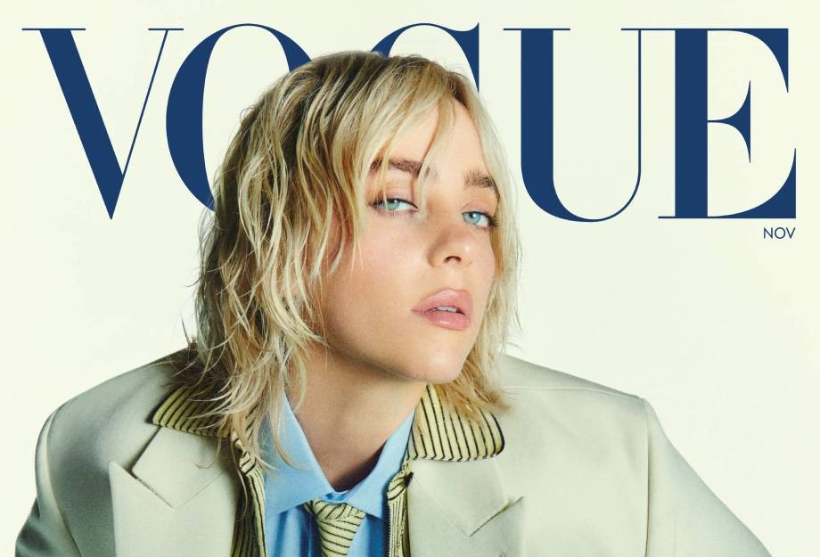

Billie Eilish Pirate Baird O’Connell é uma jovem estrela pop que compõe e canta. A menina prodígio, com uma promissora carreira internacional, está cada vez mais famosa entre o grande público. A artista nasceu em Los Angeles (Califórnia) no dia 18 de dezembro de 2001.
Billie foi criada como vegetariana e, em 2014, tornou-se vegana, estilo de vida que defende com unhas e dentes. Ela também foi voz ativa da campanha que apoia o aborto nos Estados Unidos, fala recorrentemente sobre depressão e ainda apresentou ao mundo suas dificuldades para lidar com a síndrome de Tourette.
Eilish foi educada em casa e ingressou no Coro Infantil de Los Angeles aos oito anos. Ela começou a cantar em tenra idade e começou a escrever músicas aos 11 anos, ao lado de seu irmão mais velho, Finneas O'Connell, que já estava escrevendo, tocando e produzindo suas próprias canções com sua banda.
"Aprendi que olhar para mim mesma e me ver sentir prazer tem me ajudado muito a me amar e me aceitar." Para relaxar e lidar com a depressão, o que mais gosta é fazer sexo, que, inclusive, é seu tópico favorito.
Billie Eilish. De acordo com uma entrevista recente da cantora, uma das suas atividades favoritas é passar tempo cavalgando.
Além de compor, atuar e ser uma das maiores divas teen do momento, Billie Eilish também dança. Ela costumava dançar 11 horas por dia, fazia aula de tecido e hipismo, mas acabou se machucando durante a gravação do vídeo coreografado de Ocean Eyes e teve que parar de dançar.
